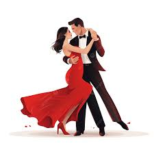

Bom, para início de conversa, isso aconteceu faz um BOM tempo! Dez anos para ser exato. Mas eu lembro como se fosse hoje. VAMOS LÁ!!!
O ano era 2014 e eu trabalhava num lugar chamado Kermesse Bazar, Papelaria e Utilidades, se lembra?
Bom, conhecia uma amiga sua chamada Hellen, e daí que veio você. Lembro-me bem do qe você disse sobre mim na sua primeira impressão: Um garoto metido, chato e sem graça. Só que aí, as coisas mudaram um pouco, parece que você se viu interessada em mim e isso ocorreu quando fomos chamados para dançarmos juntos no aniversário de 15 anos da Rafaela, a qual é prima da Hellen.
Veja a gente naquele dia: Clique Aqui!
A partir deste convite, eu aceitei, você aceitou e aí começou. Ensaiávamos juntos e você ja se mostrou gostar de mim. Eu não te dava muita bola (mas vamos ser sinceros? QUE PARTIDÃO EU IA PERDER PRA MINHA VIDA), mas você insistia em ficar perto de mim.
Nessa época você me adicionou no facebook, começou a me mandar mensagens e aí começamos a conversar. Você era bastante intensa e real nos seus sentimentos, e começou a dizer o que sentia por mim.
Nosso Primeiro Beijo
Papo vai e papo vem, começamos a conversar e aí marcamos de ir na igreja da sua vó Ruth. Você estava lá, toda bela, com sua calça branca, sapatilha rosa, blusa rosa e com um alargador na orelha que não combinava com você. - Eu estou digitando isso e estou sentindo a mesma sensação que senti no dia (QUE COISA BOA!). Na volta da igreja, eu consegui arrancar um beijo seu sem que sua vó visse, e desde então, esse foi o primeiro beijo que nós demos.
No caminho fomos conversando, rindo, brincando e quando cheguei no seu portão comprimentei sua mãe e quem estava lá, e para me despedir te dei um abraço (o que sua mãe odiou e fez ela ter uma visão errada sobre mim). E a partir disso, ela começou a ficar de olho em nós dois.
Depois desse tal primeiro beijo, começamos a marcar para nos encontrar, você dizia que ia sair com a Hellen, só que nós dois íamos para a frente de um condomínio para ficar nos beijando (QUE SAUDADES DESSE TEMPO). Nessa brincadeira, ficamos nos conhecendo por 9 meses, e eu me lembro que durante esses 9 meses, sua tia passou enquanto a gente nos beijava e você morreu de medo, sua mãe passou de carro com seu pai em frente ao meu antigo trabalho e nos viu lá também, sua mãe me ligou do seu telefone e eu atendi falando "oi, amor" e ela ficou louca de raiva, mas eu sei que no fim ela já me amava hahaha.
Lembro que após ocorrer tudo isso, fomos pra festa para dançar e lá eu sentei no seu colo e sua mãe viu. Pronto, nesse momento achei que nunca mais teria você, porém me enganei.
Passado esses 9 meses, eu te chamei pra conversar, marquei um horário contigo, em frente a serralheria que tinha na rua Kermesse. Você foi lá no local e hora marcada, conversei com você sobre tudo e no fim fiz o pedido: - Você quer namorar comigo? neste momento você deu um suspiro tão lindo e belo acompanhado de um grande "SIM".
A partir deste momento começou a nossa história de amor, em que eu aprendi a te amar com todas as minhas forças, por mais que eu não seja
perfeito, mas eu sempre faço de tudo para te ver bem. Te amo, minha pantorinha. Se quiser que eu continue editando este blog para que você
possa relembrar dos nossos momentos juntos, eu continuarei.
AMO VOCÊ!!!
Relembre um de nossos momentos clicando AQUI.